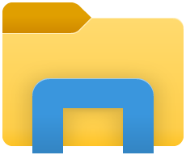

So you have a hopefully new laptop, or it might have had a previous owner.
Unfortunately, we do have to recycle available equipment, especially in the current times.
That said, the team would have checked the laptop, as carefully as possible, prior to it's issue.
But if you have any issues with it, contact the Service Desk.
To make this site as compact as possible, this is on a separate page, as it is a very important topic.
This is a very important issue, and one that we ask all Employees to follow.Password - Rules and how to change them?
Please follow this link Company Password Policy
Once you have read the page, please use the link to return to this page.
Where should I save my work files?
Please do not save any work files to the local hard disk of your laptop.
If you look in File Explorer,  you will see that there is a
OneDrive - PERNOD RICARD  folder.
folder.
You should also see in the 'This PC' section of File Explorer, some mapped Network Drives.
The standard drives mapped for every CBL user are:
data (\\ukham2kfp01.cbl.pernod-ricard.group) (J:)
shared (\\ukham2kfp01.cbl.pernod-ricard.group) (S:)
shared2 (\\ukham2k8ns02.cbl.pernod-ricard.group) (V:)
shared (\\ukham2k8ns02.cbl.pernod-ricard.group) (W:)
Use OneDrive and these mapped network drives, to save all of your work.
If your laptop is lost/stolen or is damaged beyond repair, any work not saved in these locations will be lost.
Both OneDrive and the network locations are backed up, so your work is retrievable.